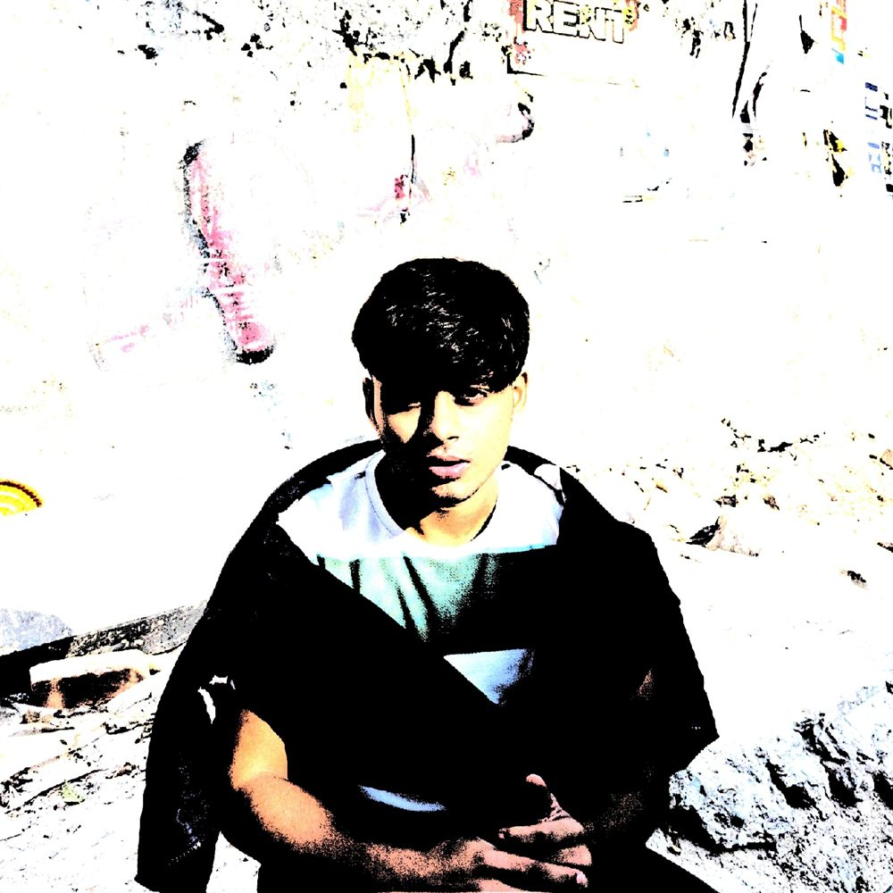
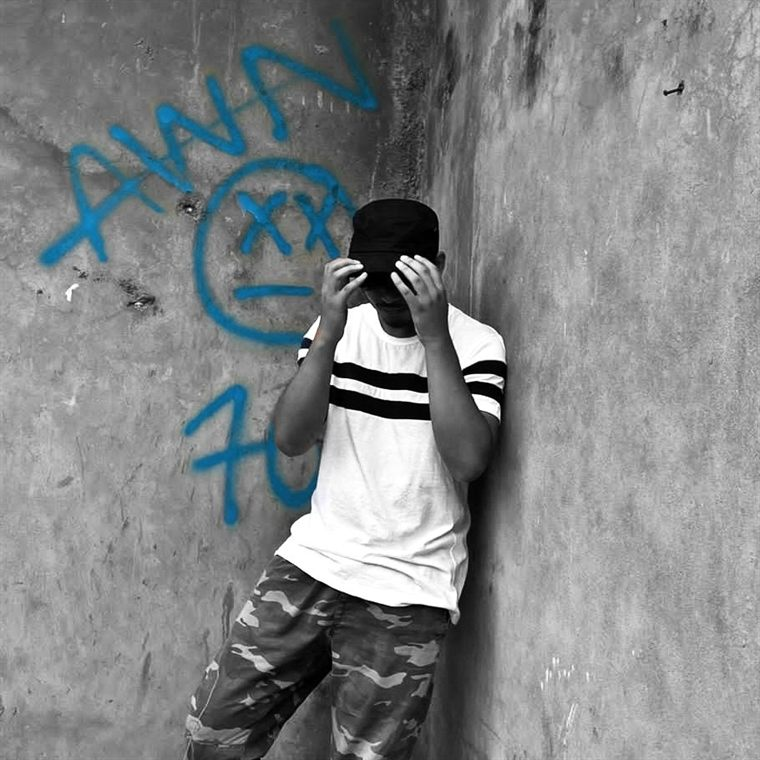

01 · the whole thing in one line
i make things.
Software. Music. Edits. Whatever I'm curious about at 3am and decide to finish anyway.
The rest of this site is the engineering half. This is the other one — everything I make that doesn't ship to a registry.

02 · 2024 · the first year it wasn't just me
191 people pressed play.
Out of nowhere, from 6 countries. Nobody was expecting that. Including me.
03 · 2025 · and then it got bigger
somehow, 43 countries.
04 · where it went
a small project,
somehow somewhere.
Five of the 43, plotted by real coordinates. The other 38 didn't get their own pin — this map only draws what's named here.
05 · the ones with faces
three covers.
three songs.
Every release gets art before it gets a distributor. These three earned theirs. Press one and it plays.
Artwork is mine. The songs are mine. Everything here was made outside a release cycle.
06 · the one that moved most
blues
Top track of 2025 by a distance. Spotify's own slide for this track reported 2.5K streams and 1K listeners.
That slide says 2.5K. The year in review says 2.1K. Both are quoted exactly as Spotify reported them — I've left the disagreement alone rather than picking the tidier number.
07 · audience depth
a small group
listened a lot.
of listeners
of streams
Three percent of the people carried nearly a third of the plays. 3 fans had me in their top 10 artists.
08 · then i went into exile
then i went
into exile.
2026, and I decided to go quiet on the public music side on purpose. I wanted to get serious about engineering.
I didn't stop making music.
It's just under the hood now.
09 · the vault
you haven't heard
everything.
There are tracks that never got a release date and edits that never got a final export. A few fragments turn up on @aaawhan when they're ready to be seen.
Stops before it ends. That's where it is.
The second verse keeps changing. Leave it.
Cut before the last shot landed.
No titles, no dates. Those aren't mine to invent yet.
10 · other things i make
when i'm not
writing code.
Edits, cuts, visual experiments — the kind of thing that exists to be looked at once and thrown away. Not a studio. A place to mess around.

cut 01More of it lives at @aaw.core.
11 · taste
what goes in.
And then — what comes out.
12 · 2026, right now